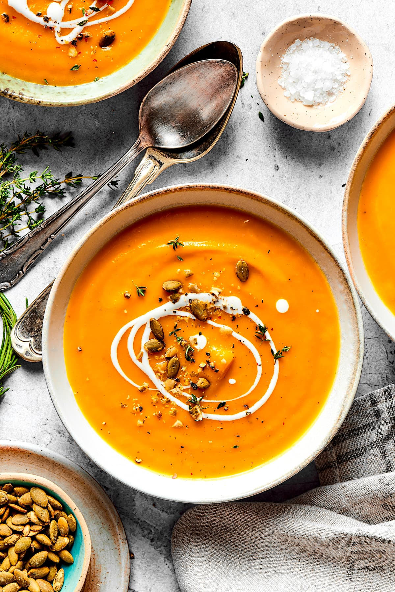

Butternut Squash Soup

A nice warm soup that is great for fall.
Ingredients
- 2 large butternut squash
- 1/2 stick of butter plus an additional 1/2 stick
- 4 Tablespoons brown sugar
- 1 small yellow onion cut into 1/4 inch dice
- 4 cups chicken stock or vegetable stock
- 2 cups heavy cream
- 1 Tbsp Ras al Hanout
Steps
- Cut the squash in half lengthwise and use a spoon to scoop out the seeds.
- Place the squash on a roasting pan skin side down and divide the 1/2 stick of butter four ways.
- Put a piece of butter in each hole where the seeds were. Add the cranberries to the pan for the last 5 minutes.
- Sprinkle 1 tablespoon of brown sugar over each half of squash and season with salt and pepper.
- Roast the squash in a 350°F oven until soft and slightly browned, about 45 minutes. Allow the squash to cool.
- In a large sauce pan, melt the remaining 1/2 stick of butter over medium heat and cook the onion until soft and translucent.
- Using a large spoon, scoop the flesh of the squash away from the skin and add it to the pot. Add the chicken stock and bring to a boil with the Ras al Hanout.
- Simmer the soup for 20 minutes. Using an immersion blender, puree the soup until smooth. Stir in the cream and serve.